Modul 7: Navigasi Lanjutan, State Management, dan Multimedia pada ResepKu
Pengembangan antarmuka aplikasi seluler yang interaktif dan kaya fitur memerlukan pengelolaan navigasi tingkat lanjut, manajemen status aplikasi (state management) yang reaktif menggunakan Provider, serta integrasi komponen multimedia seperti penanganan gambar jaringan dengan placeholder dan *error state*. Pada Modul Praktikum VII ini, aplikasi ResepKu dikembangkan lebih jauh dengan menerapkan perpindahan halaman, pengelolaan status tombol favorit lintas halaman secara global, serta pengoptimalan tata letak penayangan data resep dalam mode daftar (list) maupun grid interaktif.
Provider untuk mengelola status favorit secara global di dalam aplikasi.Pengujian awal dilakukan untuk memastikan seluruh teks pada antarmuka aplikasi ResepKu telah menerapkan tipografi font Poppins secara konsisten, serta menyertakan footer identitas (Nama dan NIM) pada setiap halaman tampilan utama.
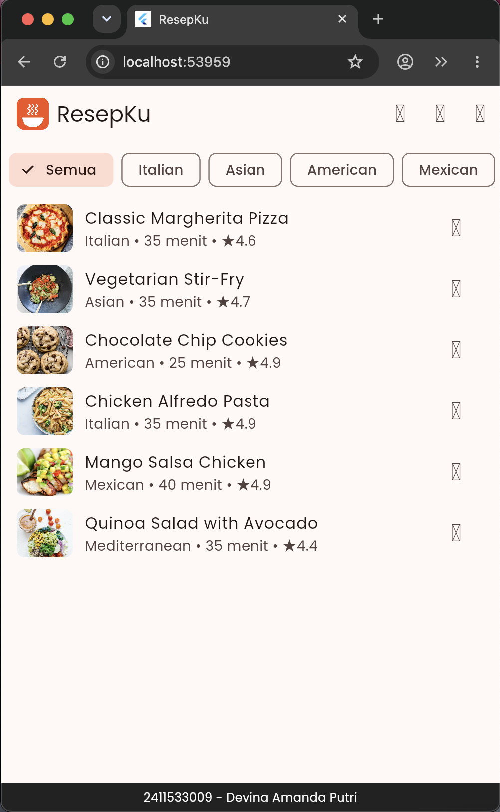
Checkpoint 1: Halaman Home ResepKu dengan tipografi Poppins dan footer identitas
Pengujian ketahanan media dilakukan dengan mensimulasikan kegagalan jaringan atau URL gambar yang tidak valid guna memastikan widget gambar otomatis beralih menampilkan gambar cadangan (placeholder) tanpa menyebabkan aplikasi mengalami crash.
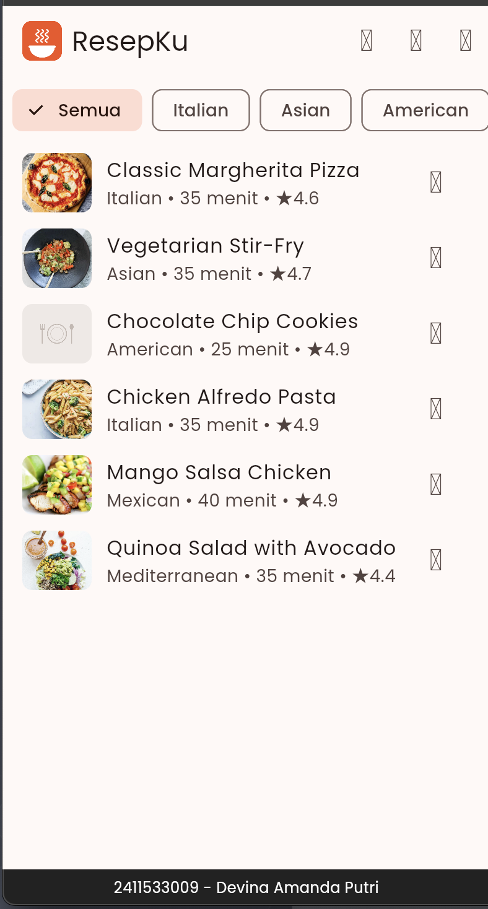
Checkpoint 2: Gambar pengganti (placeholder) tampil mulus saat koneksi gagal atau URL tidak valid
Verifikasi tata letak responsif melalui tombol pengalih tampilan ke mode grid dua kolom, serta navigasi menuju halaman detail resep yang menampilkan foto ukuran besar beserta rincian informasi dan tombol interaksi favorit.
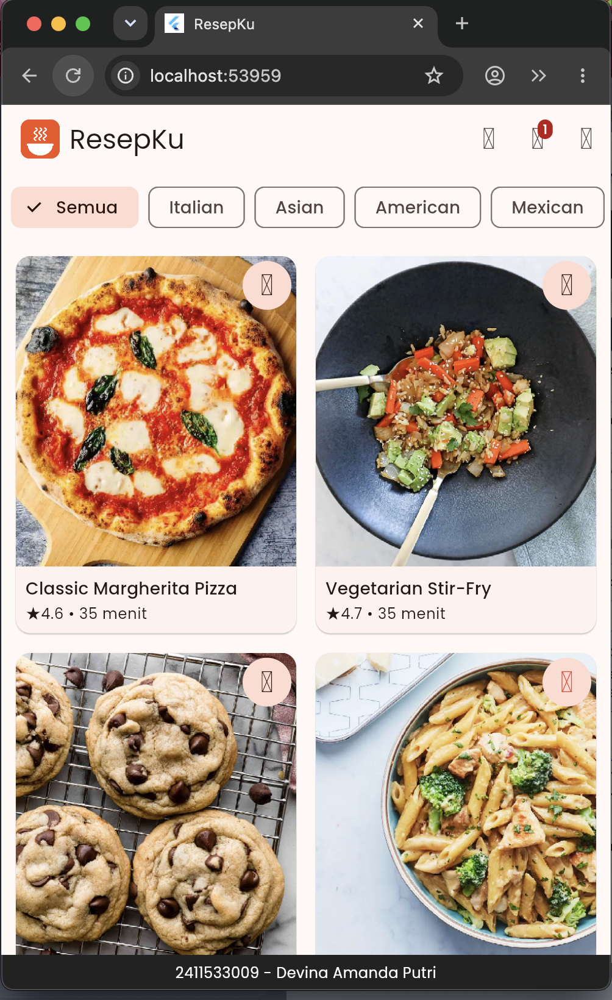
Checkpoint 3a: Tampilan daftar resep dalam mode grid interaktif dua kolom
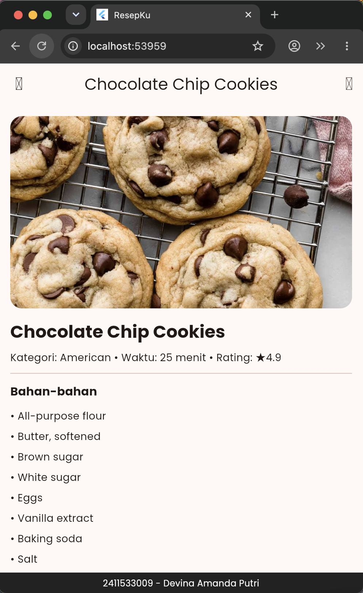
Checkpoint 3b: Halaman Detail resep dengan foto besar dan tombol aksi favorit
Berdasarkan konfigurasi SliverGridDelegateWithFixedCrossAxisCount pada HomePage dengan lebar layar perangkat 360 dp, padding horizontal 8 dp pada masing-masing sisi, jarak antar kolom (crossAxisSpacing) sebesar 8 dp, jumlah kolom (crossAxisCount) sebanyak 2, serta rasio aspek (childAspectRatio) sebesar 3 / 4 (0,75), berikut adalah rincian perhitungan ukuran setiap kartu grid:
360 dp - (8 dp × 2) = 344 dp
(344 dp - 8 dp) / 2 = 336 dp / 2 = 168 dp
Lebar Kartu / childAspectRatio = 168 dp / (3 / 4) = 168 dp × (4 / 3) = 224 dp
Dengan demikian, setiap kartu pada tampilan grid memiliki ukuran lebar 168 dp dan tinggi 224 dp.
Berikut adalah tabel hasil pengujian fungsionalitas aplikasi ResepKu yang telah divalidasi sesuai dengan seluruh skenario praktikum Modul 7:
| No | Skenario Pengujian | Hasil yang Didapat |
|---|---|---|
| 1 | Buka aplikasi | Sesuai (✔) — Logo di AppBar tampil dengan benar, font Poppins terapkan secara global, dan thumbnail foto resep termuat sempurna. |
| 2 | Tekan tombol grid di AppBar | Sesuai (✔) — Tampilan daftar resep beralih menjadi kartu dua kolom berbentuk grid; ikon di AppBar berubah menjadi ikon list. |
| 3 | Di mode grid, tap ikon hati pada salah satu resep | Sesuai (✔) — Ikon hati berubah menjadi warna merah dan angka badge indikator favorit di bagian atas bertambah. |
| 4 | Kembali ke mode list | Sesuai (✔) — Status favorit resep yang dipilih tetap tersimpan dengan benar dan ikon hati tetap berwarna merah. |
| 5 | Tap kartu resep di mode grid | Sesuai (✔) — Halaman detail resep terbuka dengan mulus, menampilkan foto resep ukuran besar di bagian atas beserta rincian lengkapnya. |
| 6 | Uji mode offline / error state | Sesuai (✔) — Gambar placeholder dari asset lokal otomatis tampil menggantikan foto jaringan yang gagal dimuat tanpa error merah. |
Penambahan baris komponen ChoiceChip horizontal di bawah AppBar pada halaman utama (HomePage). Fitur ini memungkinkan pengguna menyaring daftar resep secara instan berdasarkan kategori kuliner (seperti Italian, Asian, Mexican, dll.) baik ketika aplikasi berjalan dalam mode list maupun grid.
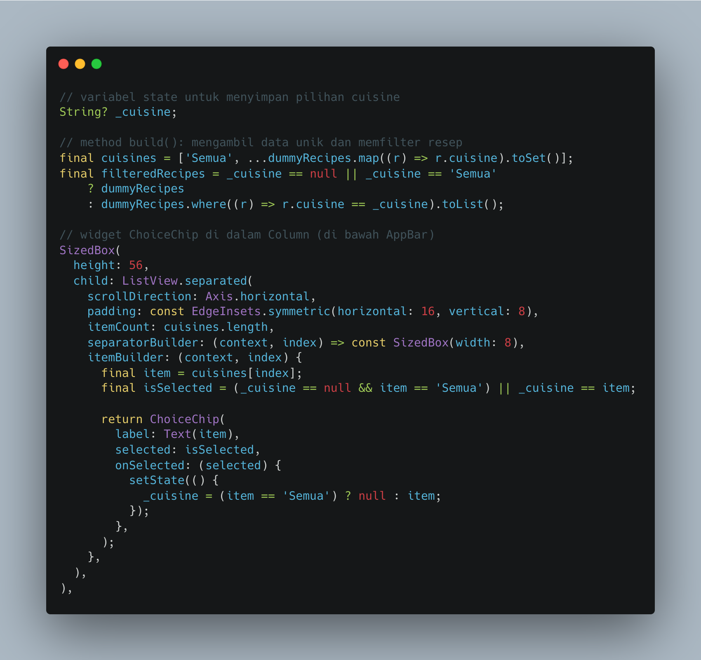
Potongan Kode 1. Logika filter dan implementasi ChoiceChip pada home_page.dart
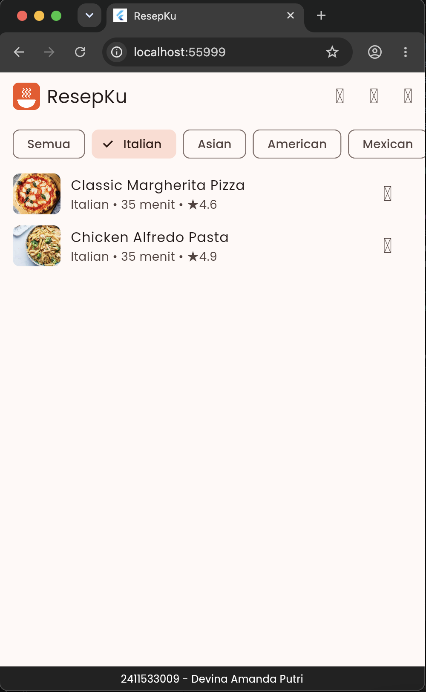
Tampilan Latihan 1: Filter resep berdasarkan kategori cuisine menggunakan ChoiceChip horizontal
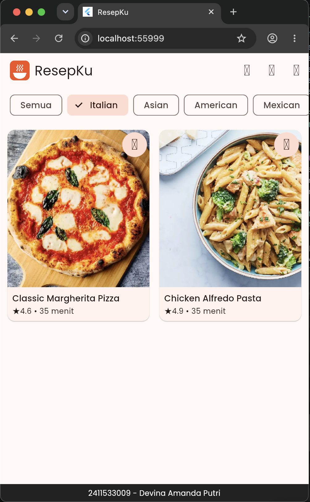
Tampilan Latihan 1: Filter resep berdasarkan kategori cuisine menggunakan ChoiceChip pada tampilan grid
Perombakan struktur halaman Favorit (FavoritePage) menggunakan ListView.separated yang dilengkapi garis pembatas (Divider) antar item, thumbnail foto resep menggunakan widget RecipeImage, serta penambahan fitur interaktif Dismissible agar resep dapat dihapus dari daftar favorit dengan cara digeser (swipe) ke arah kiri disertai kemunculan SnackBar konfirmasi.
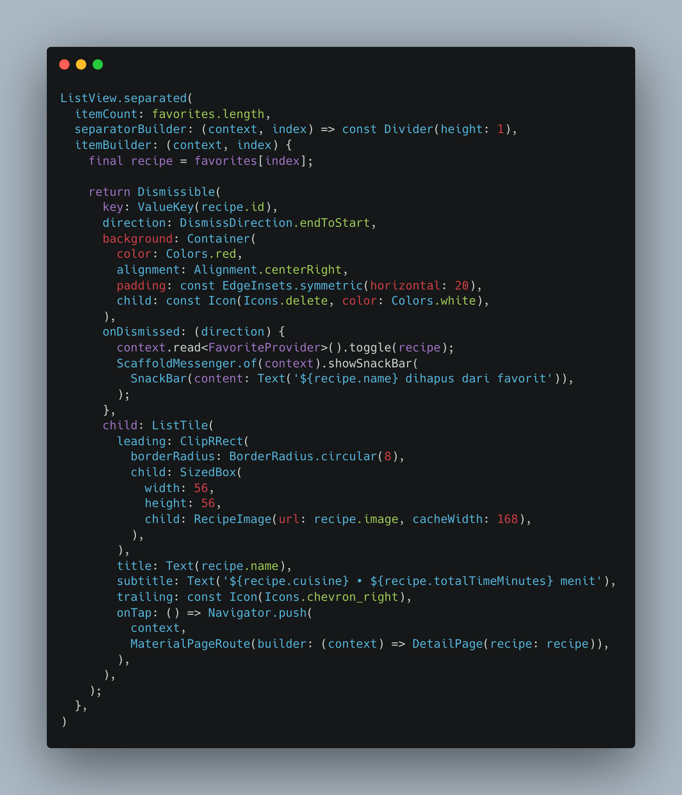
Potongan Kode 2. Implementasi ListView.separated dan Dismissible pada favorite_page.dart
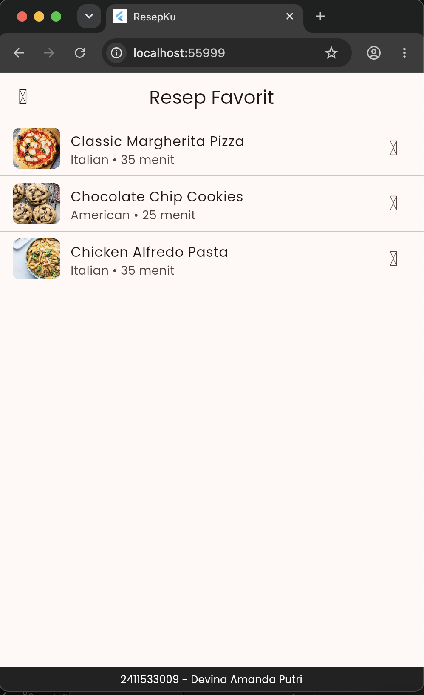
Tampilan Latihan 2: Halaman Favorit dengan Divider, thumbnail foto, dan fitur swipe hapus (Dismissible)
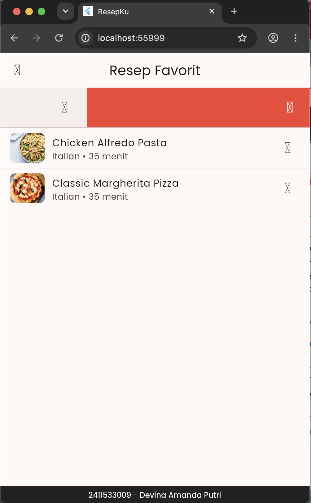
Tampilan Latihan 2: Halaman Favorit dengan fitur swipe hapus (Dismissible)
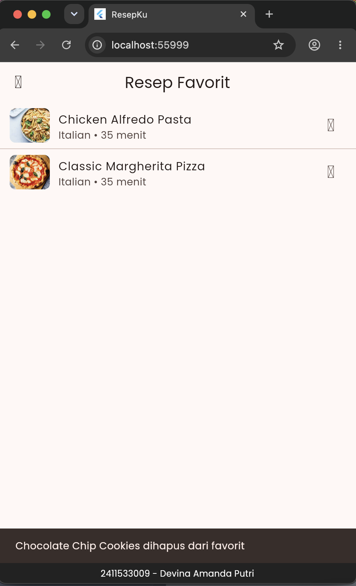
Tampilan Latihan 2: SnackBar berisi nama resep yang dihapus.
Praktikum Modul VII berhasil diselesaikan dengan baik. Penerapan navigasi lanjutan, manajemen status global menggunakan Provider, serta penanganan komponen multimedia dan error state berhasil diintegrasikan ke dalam aplikasi ResepKu. Selain itu, pengerjaan latihan tambahan berupa filter kategori kuliner (ChoiceChip) dan perombakan halaman favorit berbasis Dismissible semakin memperkaya pengalaman interaksi pengguna serta memperkuat pemahaman mendalam mengenai pengembangan aplikasi mobile berbasis Flutter.